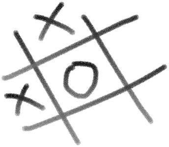
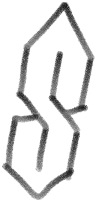
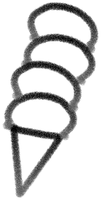
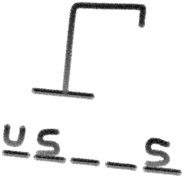

You need a designer who listens to educators and ships for students.
Hi, I'm Rahul.
I own K-12 features end to end, from watching students in classrooms to A/B-tested handoff, on a college and career readiness product. I bring a masters in how people learn, a WCAG-first accessibility practice, and a habit of putting AI to work in both the product and my own process.
Chiron — building a personalized, Socratic tutor out of an LLM
A Claude skill that turns any conversation into a Socratic micro-course, and where I work out how AI-assisted learning should actually feel to a student.
View on GitHub (opens in new tab)
Encourage — asking students for 2x the data and holding completion near 84%
When the onboarding survey for 150,000+ students had to double in length, I reordered the flow around where I'd watched students stall in classrooms and held completion near 84%.

Encourage for Educators — designing for the counselor's workflow
The counselor side of Encourage, where guidance staff track hundreds of students on the same journey at their own pace, the closest analog to Wayfinder's educator side.
What teams pull me in for, whatever the project